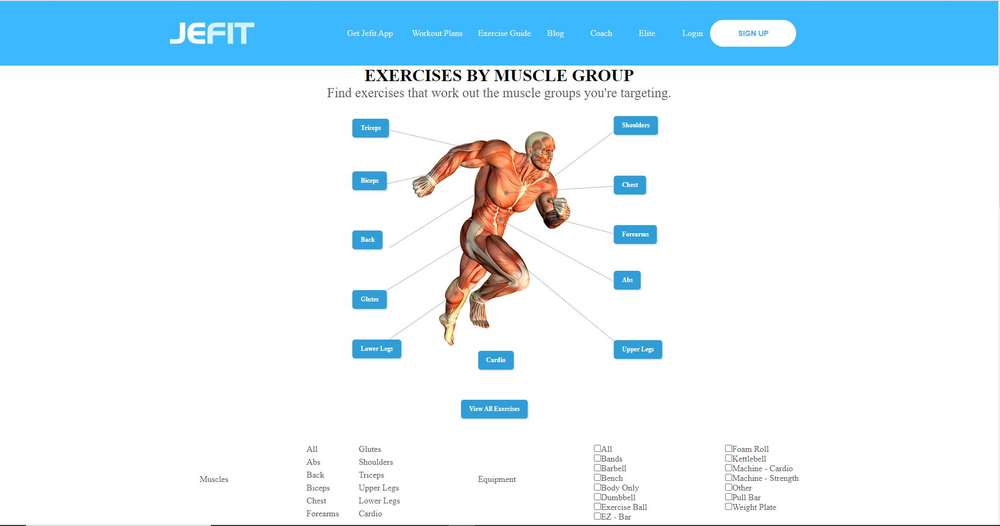
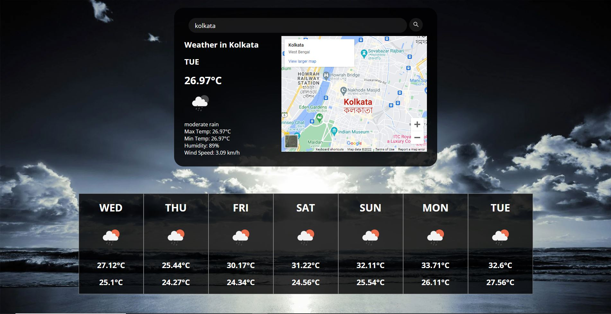
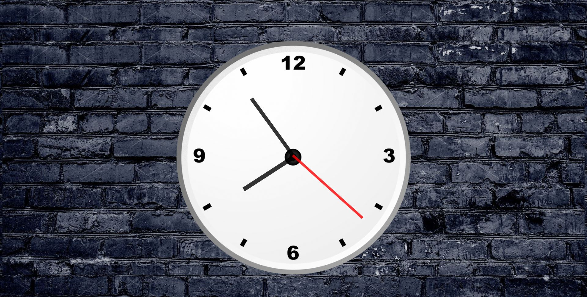

Lyst.com is an apparel and accessories e-commerce website and has a
vast range of brands and styles under its hood.
It is a collaborative project of 6 team members build in 5 days.
HTML || CSS || JavaScript
jefit.com clone

jefit.com is an online store for personal trainers and training guides, jefit.com, offers a wide variety of exercise categories that target particular muscle regions.
It is a collaborative project of 5 team members build in 5 days and I worked as a Teamlead.
HTML || CSS || JavaScript
Weather App

There is a search bar in the app, and if a city name is typed in there, it will display recent weather information for that city along with its position on a google map.
It is a self project build in 1 day.
HTML || CSS || JavaScript
Youtube Mini App
A replica of YouTube.com, Youtube Mini allows you to search for any sort of video and returns 20 results. If you click on a result, it will take you to the next page and begin playing.
It is a self project build in 1 day.
HTML || CSS || JavaScript
Analog Clock App

In the analogue clock, the time will be displayed. To display the precise time in analogue format, this clock also has hour, minute, and second hands.